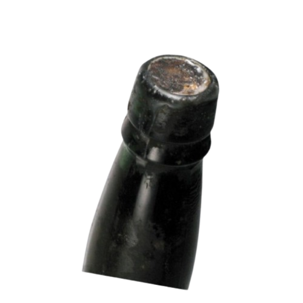

CONHEÇA OS NOSSOS VINHOS
VINHO MADEIRENSE VINTAGE
H.M. Borges
Terrantez ‘T’ Vintage
Com uma tonalidade âmbar profunda e brilhos dourados, o H.M. Borges Terrantez ‘T’ Vintage encanta desde o primeiro olhar. Este vinho madeira raro, elaborado a partir da nobre uva Terrantez, revela um buquê envolvente com notas intensas de frutos secos, caramelo salgado, casca de laranja confitada e um sutil toque de madeira envelhecida.
🔸 Uma experiência única para apreciadores exigentes.
